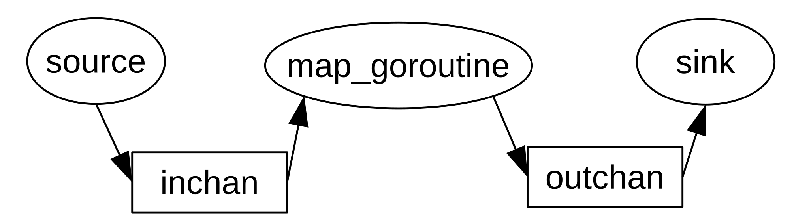
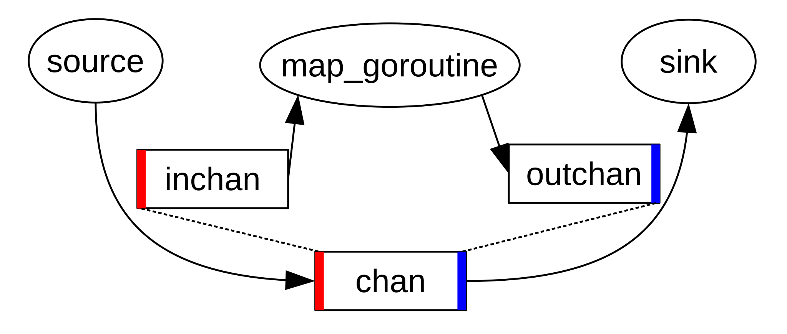

Embedding and Extending Go in Haskell
December 18, 2017 - compsci, programming-languages, golang, concurrency, haskell
Here’s a fun question: what would Go look like embedded inside of Haskell?
By “Go” here I don’t mean the full language itself but some kind of core calculus with the features that people really like about Go: namely, its synchronization primitives. This core calculus should at least have the ability to spawn new goroutines and the ability to pass data between goroutines using channels.
By “embedding” a language in Haskell, I mean that I want to re-use Haskell’s constructs for most things and only write what is specific to the language. That means only writing code involving goroutines and channels. Everything else – variables, functions, control structures – are Haskell’s. The interpreter we’re going to write for this language – let’s call it “HaskGo” – will look like a virtual machine executing a small instruction set. This makes the interpreter quite simple, since there’s no AST to traverse: HaskGo programs are just lists of instructions.
It’s not just for fun that I wanted to embed Go in Haskell. Embedding a language inside of Haskell is an easy way to model its actual implementation. There’s no lexer or parser to create, just the interpreter and the instruction set. Embedding a language in Haskell allows us to easily experiment with extending the language with new extensions. For example, determining what might channel combinators in Go look like, as we will see later on, is as easy as writing a few example programs and changing the interpreter – all within one language, Haskell.
Writing HaskGo with Free Monads
The standard way of embedding a language in Haskell is through free monads. I’m not going to dwell too much on how free monads work since there are already a lot of good resources that provide an introduction. I’m particularly fond of Gabriel Gonzalez’s blog post on the topic, linked here. The short of it is that free monads are so named because from any functor, we can derive a monad for it, for free1. Free monads are useful for creating embedded languages because they allow you to write monadic expressions that look like regular imperative code – just like how expressions in the IO monad look like imperative code – but actually denote a list of instructions for our language’s interpeter / virtual machine to execute.
With that preamble, let’s get to the code. Here’s the datatype representing the instruction set of our language:
data GoExpr =
GoInt Int
| GoBool Bool
| GoString String
deriving (Show, Eq)
type GoChan = Int
type GoProgram a = Free GoCmd a
data GoSelectBranch =
GoSelectBranch {
branchChan :: GoChan,
branchProg :: GoExpr -> GoProgram ()
}
data GoCmd next =
GoRun (GoProgram ()) next
| GoMakeChan (GoChan -> next)
| GoPutChan GoChan GoExpr next
| GoGetChan GoChan (GoExpr -> next)
| GoSelect [GoSelectBranch] next
| GoPrint String next
deriving (Functor)As promised, the instruction set is simple. GoRun denotes the instruction to spawn off a new goroutine. GoMakeChan denotes the creation of a new channel. GoPutChan and GoGetChan denote putting and and getting values from a channel respectively. GoSelect implements Go’s select control structure, which allows the user to wait on a list of channels instead of just one. If there is a branch waiting on a channel that is not blocked, select jumps to that branch; otherwise it blocks until one of the branches is unblocked. GoPrint denotes an instruction to print something on the screen. GoProgram is a type synonym for the free monad for our GoCmd instruction set. GoChan, the type of the channel value that the user has access to, is merely an Int identifier that the runtime uses, as we will see below.
Some things to note. All of the constructors have a next argument. This argument allows the free monad to build a list of instructions. GoMakeChan and GoGetChan have (GoChan -> next) and (GoExpr -> next) arguments instead of just next because the next instruction for these expects a new variable bound to the value of the new channel or value extracted from the channel respectively. To test your understanding of how free monads work, as yourself why the goroutine argument in GoRun has type GoProgram () instead of just next.
The channels aren’t typed – or, rather, are unityped: they only pass GoExprs between goroutines. The channels can only store one value at a time – this is not apparent in the datatype, but it will be reflected in the implementation of the interpreter. We can add channel types and channel buffers to the language quite easily, but we’re going to punt on those for now.
Here’s some free monad boilerplate. These are the monadic functions we will use to build HaskGo programs. I will present these with no further comment – read Gabriel’s blog post linked above to understand how this works!
class GoExprable a where
toGoExpr :: a -> GoExpr
instance GoExprable Int where
toGoExpr = GoInt
instance GoExprable Bool where
toGoExpr = GoBool
instance GoExprable GoExpr where
toGoExpr = id
liftFree x = Free (fmap Pure x)
defaultPort = 0
selcase c p = GoSelectBranch c p
seldefault p = GoSelectBranch defaultPort p
go cmd = liftFree (GoRun cmd ())
newchan = liftFree (GoMakeChan id)
putchan c v = liftFree (GoPutChan c (toGoExpr v) ())
getchan c = liftFree (GoGetChan c id)
select bs = liftFree (GoSelect bs ())
goprint s = liftFree (GoPrint s ())An interesting thing to note is that select as implemented above is strictly more expressive than in Go, as the list of branches on which it waits is just a regular value. That means it can block on a list of branches given as an argument to a function, something that is impossible in Go.
Here’s what a HaskGo program looks like, using the functions above. The following is an elegant solution to the classic producer-consumer problem:
consume :: GoChan -> GoProgram ()
consume chan = do
v <- getchan chan
goprint $ show v
consume chan
produce :: [Int] -> GoChan -> GoProgram ()
produce range chan = do
forM_ range $ \i -> do
putchan chan i
bufmain :: GoProgram ()
bufmain = do
c <- newchan
go $ produce [1..10] c
go $ consume c
goprint "producer-consumer queue running!"While distinctly Haskell in syntax, if you squint a little it does indeed have Go-like synchronization primitives: you can create a channel and bind a variable to it (i.e. channels are first-class); you can spawn off goroutines just with the go command; and you can get and put values into channels.
Now for the interpreter proper. The interpreter will be, essentially, a simulation of the Go runtime. What kind of data does the HaskGo runtime need to keep track of? The runtime must handle goroutines and channels, so we must at least have a list of each. We also need a map from channels to values put in them. For scheduling purposes we also need a ready queue, as well as wait queues for each channel to keep track of goroutines blocked on it. So the runtime state should look something like this:
data GoRuntime =
GoRuntime {
curGoroutine :: GoRoutine,
nextGoroutine :: Int,
goroutines :: M.Map GoRoutine (GoProgram ()),
nextPort :: GoChan,
portVals :: M.Map GoChan (Maybe GoExpr),
waitQueues :: M.Map GoChan [GoRoutine],
readyQueue :: [GoRoutine]
}This should be almost self-explanatory. curGoroutine is the current goroutine scheduled; nextGoroutine and nextPort are the identifiers of the next created goroutine and channel respectively. goroutines is a map from goroutines to the program they are executing; portVals is a map from channels to the (possible) values they hold. readyQueue and waitQueues keep track of scheduling information as described above. (Why the runtime state keeps data on ports instead of channels will become clear later when we extend HaskGo.)
Finally, the HaskGo interpreter. First, some helper functions:
type GoInterp = ExceptT String (StateT GoRuntime IO)
scheduleNextGoroutine :: GoInterp ()
scheduleNextGoroutine = do
st <- get
let rq = readyQueue st
case rq of
rid:rs -> do
case M.lookup rid (goroutines st) of
Just cont -> do
put $ st { curGoroutine = rid, readyQueue = rs }
interpGo cont
Nothing -> do
throwError $ "invalid goroutine id " ++ (show rid)
[] -> return ()
wakeFromWaitQueue :: GoChan -> GoInterp ()
wakeFromWaitQueue port = do
st <- get
let wqs = waitQueues st
case M.lookup port wqs of
Just (rid:rs) -> do
-- because of select, the woken goroutine might be in
-- several wait queues. we must remove it from all wait queues
let wqs' = M.map (filter (\rid2 -> not (rid == rid2))) wqs
let rq = readyQueue st
let rq' = rq ++ [rid]
put $ st { readyQueue = rq', waitQueues = wqs' }
-- nobody to wake!
Just [] -> return ()
Nothing -> throwError $ "unknown port " ++ (show port)
addToWaitQueue :: GoChan -> GoRoutine -> GoProgram () -> GoInterp ()
addToWaitQueue port rid cont = do
st <- get
let wqs = waitQueues st
case M.lookup port wqs of
Just wq -> do
-- add to port's wait queue
let wq' = wq ++ [rid]
let wqs' = M.insert port wq' wqs
-- update goroutine program with new instruction stream
let grs = M.insert rid cont (goroutines st)
put $ st { waitQueues = wqs', goroutines = grs }
Nothing -> throwError $ "unknown port " ++ (show port)Notice that the interpreter is in a monad transformer stack consisting of IO (to print to stdout), State (to track runtime state) and Except (to handle errors). scheduleNextGoroutine is, as its name implies, the scheduling function. It implements a basic round-robin scheduler. wakeFromWaitQueue and addToWaitQueue either removes or adds a goroutine from channel wait queues. The only thing that might give pause is the cont argument to addToWaitQueue, which contains the rest of the computation (the continuation) that the goroutine needs to execute. If we do not update this, the next time the goroutine is scheduled it will restart execution of the computation from the beginning!
Once these helper functions are in place, the actual interpreter is quite straightforward.
interpGo :: GoProgram () -> GoInterp ()
interpGo prog = case prog of
-- create a new goroutine and add it to the back of the ready queue
Free (GoRun goroutine next) -> do
st <- get
let rnum = nextGoroutine st
let rmap = goroutines st
let rmap' = M.insert rnum goroutine rmap
let rq = readyQueue st
let rq' = rq ++ [rnum]
put $ st {
nextGoroutine = rnum+1,
goroutines = rmap',
readyQueue = rq'
}
interpGo next
-- create a new channel
Free (GoMakeChan next) -> do
st <- get
let pnum = nextPort st
let pmap = portVals st
let pmap' = M.insert pnum Nothing pmap
let wqs = waitQueues st
let wqs' = M.insert pnum [] wqs
put $ st { nextPort = pnum+1, portVals = pmap', waitQueues = wqs' }
interpGo $ next pnumGoRun and GoMakeChan create goroutines and channels respectively. There’s just a lot of code to update the runtime state, but otherwise these are pretty straightfoward.
Next are GoPutChan and GoGetChan.
-- put a value in a channel
Free (GoPutChan port v next) -> do
st <- get
let pmap = portVals st
let rid = curGoroutine st
-- block goroutine if channel is full,
-- otherwise put value into channel
case M.lookup port pmap of
Just Nothing -> do
let pmap' = M.insert port (Just v) pmap
put $ st { portVals = pmap' }
wakeFromWaitQueue port
interpGo next
Just _ -> do
addToWaitQueue port rid prog
scheduleNextGoroutine
Nothing -> do
throwError $ "Channel " ++ (show port) ++ " not found!"
Free (GoGetChan port next) -> do
st <- get
let pmap = portVals st
let rid = curGoroutine st
-- block goroutine if channel is empty,
-- otherwise get value from channel
case M.lookup port pmap of
Just Nothing -> do
addToWaitQueue port rid prog
scheduleNextGoroutine
Just (Just cval) -> do
let pmap' = M.insert port Nothing pmap
put $ st { portVals = pmap' }
wakeFromWaitQueue port
interpGo $ next cval
Nothing -> do
throwError $ "Channel " ++ (show port) ++ " not found!"These are duals of each other. GoPutChan puts a value in the channel if it is empty, and blocks the goroutine otherwise. GoGetChan extracts a value from the channel if it is full, and blocks the goroutine otherwise. When either operation is successful (i.e. doesn’t block), we wake goroutines that are blocked on the channel.
A subtlety: notice that when the goroutine is blocked on the channel, it stores prog as the continuation instead of next. This is so because prog contains the current instruction being executed, and we want to try executing the instruction again when it is woken up. For example, if executing GoGetChan blocks on an empty channel, we want to execute GoGetChan again when the goroutine is woken up and the channel is full.
select is probably the most complicated.
Free (GoSelect branches next) -> do
st <- get
let rid = curGoroutine st
unblockedBranches <- filterM isBranchUnblocked branches
case unblockedBranches of
-- one of the branches is unblocked. jump to it
b:bs -> do
let bprog v = (branchProg b) v >> next
-- notice that we have to add the instruction stream after the
-- branch, otherwise it won't be executed!
interpGo $ Free (GoGetChan (branchChan b) bprog)
-- all of the branches are blocked.
-- block the goroutine until one of
-- the branches becomes unblocked
[] -> do
let ports = map (snd . branchChan) branches
forM ports $ \port -> addToWaitQueue port rid prog
scheduleNextGoroutine
where
isBranchUnblocked :: GoSelectBranch -> GoInterp Bool
isBranchUnblocked branch = do
st <- get
let port = branchChan branch
-- default port is always unblocked
if port == defaultPort
then return True
else do
case M.lookup port (portVals st) of
Just Nothing -> return False
Just (Just cval) -> return True
Nothing -> do
throwError $ "Channel " ++ (show port) ++ " not found!"There are two cases:
If there are branches that are unblocked, we pick the first one, and essentially execute a
GoGetChancommand: we extract the value from the channel we block on, apply the value to the branch code, and then execute it.If all branches are blocked, we block the goroutine.
Another subtlety: notice that we need to bind the next argument to the executed branch. Otherwise the rest of the instructions after select won’t be executed!
Finally here’s GoPrint, which is trivial:
Free (GoPrint e next) -> do
liftIO $ putStrLn e
interpGo next
-- goroutine is finished: run next one
Pure _ -> scheduleNextGoroutineWe now have a HaskGo interpreter. Let’s write a helper function to initialize the runtime state and run the interpreter:
run_gomain :: GoProgram () -> IO ()
run_gomain main = do
let init = GoRuntime { curGoroutine = 1, nextGoroutine = 2,
goroutines = M.empty, nextPort = 1, portVals = M.empty,
waitQueues = M.empty, readyQueue = [] }
res <- evalStateT (runExceptT (interpGo main)) init
case res of
Left err -> putStrLn err
Right _ -> return ()Let’s see the output of the producer-consumer HaskGo program from above:
>> run_gomain bufmain
producer-consumer queue running!
GoInt 1
GoInt 2
GoInt 3
GoInt 4
GoInt 5
GoInt 6
GoInt 7
GoInt 8
GoInt 9
GoInt 10Works as expected!
How about something more complicated? Here’s a sieve of Eratosthenes! 2
source :: Int -> GoChan -> GoProgram ()
source max c = do
forM_ [2..max] $ \i -> do
putchan c i
pfilter :: Int -> GoChan -> GoChan -> GoProgram ()
pfilter p left right = do
GoInt v <- getchan left
if v `mod` p /= 0
then do
putchan right v
pfilter p left right
else do
pfilter p left right
sink :: GoChan -> GoProgram ()
sink chan = do
GoInt v <- getchan chan
goprint $ "got prime: " ++ (show v)
chan' <- newchan
go $ pfilter v chan chan'
sink chan'
sievemain :: GoProgram()
sievemain = do
goprint "running prime sieve..."
c <- newchan
go $ source 50 c
go $ sink cLet’s break down what’s going on here. source just puts integers into a channel in sequence, up to some maximum number. sink extracts a value from chan channel, and then once it does it spawns off a pfilter goroutine, creates a new channel, and then extracts values from that. pfilter extracts values from a left chan, checks if it is a multiple of p, and if it isn’t passes it to the right channel.
Do you see what’s going on? Every time sink extracts a prime number from chan, it creates a new filter between it and source to filter out multiples of the prime number just extracted. It looks like this:
source <--> pfilter 2 <--> pfilter 3 <--> ... <--> sinkAnd thus:
>> run_gomain sievemain
running prime sieve...
got prime: 2
got prime: 3
got prime: 5
got prime: 7
got prime: 11
got prime: 13
got prime: 17
got prime: 19
got prime: 23
got prime: 29
got prime: 31
got prime: 37
got prime: 41
got prime: 43
got prime: 47As you can see, this style of programming leads to particularly elegant solutions, even though concurrency isn’t strictly necessary to solve them. I’m feeling a little philosophical so I’m going to draw a more general lesson here. Most programs we write are structured to reflect an increasingly archaic model of hardware: a single-core processor executing instructions one at a time. We resort to concurrency only when the problem demands it – as in writing web servers or databases, for example – or to exploit multicore processors and make our programs parallelized. But what if we write concurrent programs simply because they’re the most elegant way of solving the problem at hand? How will we change how we code if, instead of treating concurrency as a tool of last resort or as an optimization, we use it pervasively? Is this aversion to concurrency another incarnation of the von Neumann bottleneck?
I’m glad Go has expanded the Overton window, so to speak, when it comes to what counts as mainstream synchronization primitives. But the design space is obviously still wide and sparse, and I’m sure there are more interesting questions to be answered in the offing.
I digress – now let’s talk about how to make channels more interesting.
HaskGo with Channel Combinators
Here’s where our choice to implement an embedded language instead of implementing one from scratch will pay dividends. Let’s say we want to implement channel combinators – functions that take a channel, does some transformation on it, and return a new channel. What kinds of combinators do we want to write? At a very high level, we can see channels as semantically being streams of values. So let’s start off with some combinators from elementary functional programming.
Here’s a first pass at chan_map, which like regular old map applies a function “element-wise” to every value in the channel:
chan_map :: (GoExpr -> GoExpr) -> GoChan -> GoChan
chan_map f chan = -- WHAT TO PUT HERE??Hm. As we’ve seen in the implementation of the HaskGo interpreter, a channel value is really just an identifier. There is no way to extract values from it outside of the interpreter. So chan_map actually needs to be a HaskGo program.
Here’s a second pass at chan_map:
chan_map :: (GoExpr -> GoExpr) -> GoChan -> GoProgram GoChan
chan_map f chan = do
v <- getchan chan
putchan chan (f v)
return chanA little better, though definitely not right either. This will only work as intended if chan_map is scheduled to run before any other goroutine that extracts a value from chan. Also, this will only work at most once, since it only extracts a value from chan once.
What we really need chan_map to do is to spawn a new goroutine, one that repeatedly extracts values from chan, applies the value to f, and then pushes the output of f into a new channel. In this way, goroutines pushing values should do it to the old channel, and goroutines extracting values should do so from the new channel.
chan_map :: (GoExpr -> GoExpr) -> GoChan -> GoProgram GoChan
chan_map f inchan = do
outchan <- newchan
go $ map_goroutine outchan
return outchan
where map_goroutine outchan = do
v <- getchan inchan
putchan outchan (f v)
map_goroutine outchanThis works, albeit awkwardly. Here’s one way to use it:
source lst chan = do
forM_ lst $ \x -> do
putchan chan x
sink chan = do
v <- getchan chan
goprint (show v)
sink chan
mapmain = do
inchan <- newchan
outchan <- chan_map (\GoInt x -> GoInt (x+100)) inchan
go $ source [1..10] inchan
go $ sink outchanThis will work as intended and print out 101 to 200. However, notice that the two channels here are being treated as unidirectional: one channel is only receiving input (i.e. only calls to the channel are putchan) while the other channel is only returning output (i.e. only calls to the channel are getchan). chan_map spawned off a goroutine to pipe the input from inchan to outchan, but that is (and should be) invisible to the user. It would be nice if instead of having two unidirectional channels, we would have just one bidirectional channel – that is, just a regular channel. We want something like this:
mapmain = do
chan <- newchan >>= chan_map (\GoInt x -> GoInt (x+100))
go $ source [1..10] chan
go $ sink chanThe source goroutine puts values 1 to 100 in the channel, and then when sink extracts values out of the channel it will magically receive 101 to 200. As currently implemented, chan_map will not work as intended here. How will we implement this feature?
The trick is as follows: we’re going to change what a channel value means. Currently, a channel is a key into a runtime map that may or may not hold a value. Now instead of a single key into a runtime map, instead it will be a pair of keys: one key will be used to push values into the map, and the other key will be used to get values from it.
Some diagrams might help with the explanation.

The diagram above should be pretty self-explanatory. For this to work properly the source function needs to be passed the inchan channel and the sink channel needs to be passed the outchan channel. chan_map currently returns outchan. To make it so that we can pass the same channel to both source and sink, we’re going to change chan_map so that it returns a “virtual” channel: when a goroutine pushes a value to it, the goroutine is really pushing a value to inchan; when a goroutine extracts a value from it, the goroutine is really extracting a value out of outchan. So under the hood the same thing is happening, but the interface to the user is a bit nicer. Like so:

Let’s see how this change looks like in code.
type ChanPort = Int
type GoChan = (ChanPort, ChanPort)
data GoRuntime =
GoRuntime {
curGoroutine :: GoRoutine,
nextGoroutine :: Int,
goroutines :: M.Map GoRoutine (GoProgram ()),
nextPort :: ChanPort,
portVals :: M.Map ChanPort (Maybe GoExpr),
waitQueues :: M.Map ChanPort [GoRoutine],
readyQueue :: [GoRoutine]
}
wakeFromWaitQueue :: GoChan -> GoInterp ()
wakeFromWaitQueue port = do ...
addToWaitQueue :: ChanPort -> GoRoutine -> GoProgram () -> GoInterp ()
addToWaitQueue port rid cont = do ...As mentioned above, we’re changing channel values to be pairs of keys, one of the “inport” of the channel and another for the “outport” of the channel. Hence the name “port” instead of “channel” in the runtime code. For the helper functions, nothing really changes except the type annotations. Since GoChan is now a pair these should instead take in ChanPort arguments.
Now to changes to the interpreter proper.
interpGo :: GoProgram () -> GoInterp ()
interpGo prog = case prog of
Free (GoMakeChan next) -> do
{- code here stays the same ... -}
interpGo $ next (pnum, pnum)
Free (GoPutChan (port,_) v next) -> do
{- code here stays the same ... -}
Free (GoGetChan (_,port) next) -> do
{- code here stays the same ... -}There’s not much to change. GoMakeChan should now return a pair. GoPutChan should put values in the first port of the channel. GoGetChan should put values in the second port of the channel. That’s pretty much it!
Now, we can finally write chan_map.
chan_map :: GoExprable a => (GoExpr -> a) -> GoChan -> GoProgram GoChan
chan_map f inchan@(inchan_put,_) = do
outchan@(_, outchan_get) <- newchan
go $ map_goroutine inchan outchan
return (inchan_put, outchan_get)
where
map_goroutine inchan outchan = do
val <- getchan inchan
putchan outchan $ toGoExpr $ f val
map_goroutine inchan outchanAnd voila!
>> run_gomain mapmain
GoInt 101
GoInt 102
GoInt 103
GoInt 104
GoInt 105
GoInt 106
GoInt 107
GoInt 108
GoInt 109
GoInt 110Here’s a particularly useful combinator, chan_partition, and a nice use for it.
-- partition an input channel into two output channels
chan_partition :: (GoExpr -> Bool) -> GoChan -> GoProgram (GoChan, GoChan)
chan_partition pred chan@(chan_put, _) = do
lchan@(_, lchan_get) <- newchan
rchan@(_, rchan_get) <- newchan
let lchan' = (chan_put, rchan_get)
let rchan' = (chan_put, lchan_get)
go $ partition_goroutine lchan rchan
return (lchan', rchan')
where
partition_goroutine lchan rchan = do
val <- getchan chan
if pred val
then do
putchan lchan val
partition_goroutine lchan rchan
else do
putchan rchan val
partition_goroutine lchan rchan
count :: GoExprable a => [a] -> GoChan -> GoProgram ()
count [] chan = return ()
count (x:xs) chan = do
putchan chan x
count xs chan
printLeftRight n left right = do
forM_ [1..n] $ \_ -> do
select [
selcase left (\x -> do
goprint $ "left: " ++ (show x)
),
selcase right (\x -> do
goprint $ "right: " ++ (show x)
)]
eomain :: GoProgram ()
eomain = do
c <- newchan
(evenchan, oddchan) <- chan_partition (\(GoInt x) -> x `mod` 2 == 0) c
go $ count ([1..] :: [Int]) c
go $ printLeftRight 10 evenchan oddchanAnd as you’d expect:
>> run_gomain eomain
left: GoInt 1
right: GoInt 2
left: GoInt 3
right: GoInt 4
left: GoInt 5
right: GoInt 6
left: GoInt 7
right: GoInt 8
left: GoInt 9
right: GoInt 10In fact, you can basically just go through Haskell’s Data.List library and implement most of the functions there as channel combinators. It’s a fun exercise – I recommend doing it.
A nice improvement for the future would be to do some kind of deforestation analysis on channel combinators. For example, consider the channel
newchan >>= chan_map (\(GoInt x) -> x + 10)
>>= chan_map (\(GoInt x) -> x*2)Instead of creating two intermediate goroutines, we can optimize this to just have one:
newchan >>= chan_map (\(GoInt x) -> (x+10)*2)I think we can get away with having at most one intermediate goroutine that does the transformation between input and output channels, no matter how many channel transformations we bind together. But it would involve adding extra state to the runtime that keeps track of what goroutines feed from and push to which channels.
That’s it for now. If you want to see the full source code for HaskGo, see this gist. Until next time!
“Free” as in beer (gratis). I’m a little fuzzy on the category theory details, but I think free monads are also free, as in speech (libre). Here is a discussion on StackOverflow to whet your appetite.↩
NB: I originally encountered this implementation of the sieve in a class for which I was a TA, Cornell’s CS 4410 (Operating Systems). It was a testcase for a project that involved implementing a threading library in C. The original C code had to manually manage channels using semaphores. The HaskGo version is a lot simpler, since the semaphores are managed by the runtime: you can see calls to
addToWaitQueueandwakeFromWaitQueuein the interpreter as calls toP()andV()to channel semaphores.↩